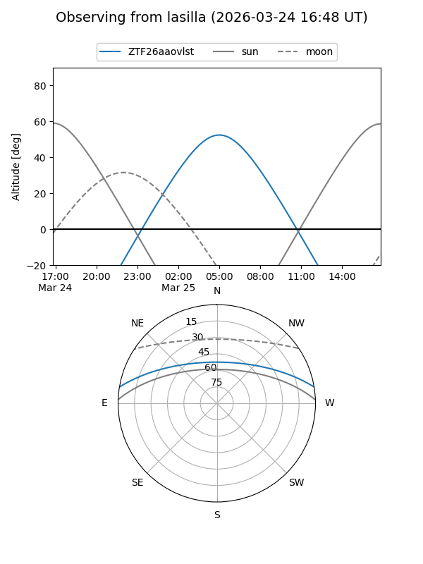
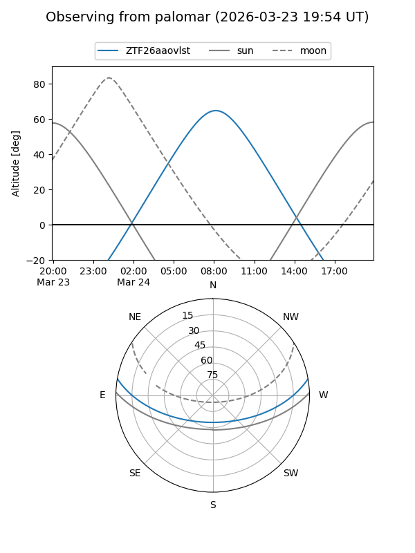

ZTF26aaovlst
Target ZTF26aaovlst at 2026-03-24 10:09
Aliases and brokers:
FINK: link
Lasair: link
ALeRCE: link
alt names
ZTF26aaovlst (ztf,fink_ztf)
Coordinates:
equatorial (ra, dec) = 186.6090,+8.39370
equatorial (HMS+DMS) = 12:26:26.16,+08:23:37.31
galactic (l, b) = (284.2478,+70.35314)
Flags:
Photometry:
last ztfg=20.14
1 ztfg detections
Lightcurve
Visibility


Additional plots